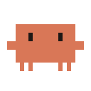
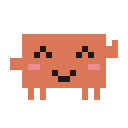

Ollie
Keeps an eye on your agents, and steers them.
Xiaozhi Ollie is based on the original XiaoZhi firmware, modified to turn the SenseCAP Watcher into a voice companion for your desk. Say “Hey Ollie” to check on your Claude Code and Codex sessions, approve a request, record a meeting or see how much of your plan is left. Clawd shows what is going on.


The screen plays a demo on its own. Click the wheel or use the buttons to take over; scroll over the screen to turn the wheel.
- Claude Code
- Codex
- herdr
- macOS
Ask out loud, from anywhere.
The Watcher talks to your own server on your Mac through a private Tailscale address. Nothing goes through the xiaozhi.me cloud. Anything that changes something asks you to confirm by voice first. Ollie speaks English, Portuguese, Chinese and Spanish.
How are my sessions doing?
Lists your herdr sessions: which are waiting for you, which are working, which have subagents running and what they finished.
What is the checkout session doing?
Reads the session’s screen and sums it up in a sentence or two.
Tell the api session to run the tests.
Repeats the request, asks “confirm?”, and only then sends the instruction or approves the permission.
Ask Claude how the open PR is going.
Runs claude -p on your Mac in read-only mode, with your own skills and memory.
Open a Codex session on the docs repo to review the README.
Starts a new session in herdr.
How much of my Claude plan have I used?
Shows and reads out the 5-hour and weekly usage, and when each one resets.
Remember the team meeting is at three.
Saves it to Lembretes.md in iCloud Drive and to the offline memory on the microSD card.
One wheel does it all.
The Watcher has a wheel on its corner that turns and clicks. The firmware counts the clicks and knows whether you are on the home screen or inside an app.
Talk. Click again to interrupt the answer.
Back: the previous screen of the app, then the drawer, then close.
Opens and closes the app drawer.
Volume on the home screen. Navigation in the drawer and inside apps.
Powers off when the Watcher is not charging.
Factory reset. The original firmware used 10 s, which was too easy to trigger by accident.
Apps on the wheel.
Click three times to open the drawer. Each app is one file in placa/apps/ plus one line in the registry, so adding your own is quick.
Clawd reacts to everything.
Every reaction is a 128 px pixel-art GIF drawn by a Python script (mascote-clawd/gerar.py). The server picks an emotion for each answer, and the firmware switches states on its own while it listens, thinks and talks.
From the Watcher to your Mac.
The firmware is the front end. The smarts run on a server you host at home, so your keys and access stay under your control.
SenseCAP Watcher running Xiaozhi Ollie
Detects “Hey Ollie” on the chip, shows speech in up to three lines and runs the apps in the drawer.
home Wi-Fi or phone hotspot · wss and https
Tailscale Funnel
Only one secret path is public. The root returns 404.
xiaozhi-server on your Mac
Listens on 127.0.0.1 only. Transcribes, thinks and speaks through any OpenAI-compatible API, such as OpenRouter.
voice → text → model → voice
MCP bridge
herdr sessions, claude -p, codex exec, Multica, macOS Shortcuts, weather, reminders and your Claude plan usage. No free-form shell.
Made for the Watcher. Works with other XiaoZhi devices.
The full firmware targets the SenseCAP Watcher. The Ollie server speaks the standard XiaoZhi protocol, so other devices running XiaoZhi can use the same voice assistant and agent tools.
SenseCAP Watcher
Seeed Studio. The complete Xiaozhi Ollie firmware: app drawer, wheel controls, Clawd, boot screen, round speech layout, microSD memory and alerts.
Other XiaoZhi devices
Any board running XiaoZhi v2 can talk to the Ollie server: enter its address in the “Custom OTA URL” field of the Wi-Fi setup page. You get the voice assistant and the tools for Claude Code, Codex, herdr and macOS. The Watcher-only screens need porting.
- Espressif ESP32-S3-BOX-3
- M5Stack CoreS3
- M5Stack AtomS3R with Echo Base
- M5Stack Tab5
- M5Stack Cardputer ADV
- Waveshare ESP32-S3 Touch AMOLED 1.8
- Waveshare ESP32-S3 Touch LCD 1.85
- LILYGO T-Circle-S3
XiaoZhi v2.5.0 ships about 170 board configurations; these are a few examples. We have tested the Ollie server only with the SenseCAP Watcher so far.
What the firmware changes.
Ollie applies its changes as patches on top of a clean XiaoZhi v2.5.0, so new upstream versions can be followed without maintaining a fork.
| Area | Original XiaoZhi | Xiaozhi Ollie |
|---|---|---|
| Languages | Many interface languages; the assistant runs in the xiaozhi.me cloud | English, Portuguese, Chinese and Spanish end to end: screen, apps, alerts, voice and answers |
| Wake word | “你好小智” | “Hey Ollie”, or one of 8 agent names |
| Server | xiaozhi.me | Your own server on your Mac, address built in |
| Mascot | Noto emoji | Clawd, as animated pixel-art GIFs |
| Boot screen | XiaoZhi logo | Clawd waving, Ollie logo and version |
| Speech on screen | One line scrolling sideways | Up to three lines, paced with the voice |
| Font | Noto Sans | Noto Sans or JetBrains Mono, picked in Settings |
| Home screen | Time | Day, date, time and a greeting with your name |
| Wheel | Volume and talk | Also the app drawer and back |
| microSD | Unused | Conversation log, meeting copies and offline memory |
| Alerts | None | Session waiting for you, task finished, meeting ready |
Build it from scratch.
Set up the server on your Mac first, then the firmware. The first flash backs up the device and leaves the factory partition alone.
You will need
- A SenseCAP Watcher, ideally the “for XiaoZhi” edition
- A Mac that stays on at home, with Tailscale
- An OpenAI-compatible API key (OpenRouter, for example)
- ESP-IDF v6.1 to build the firmware
- Optional: a microSD card in FAT32 with MBR (ESP-IDF cannot read exFAT or GPT)
Prefer to let a coding agent do it? The install guide in docs/INSTALL.md has a ready-made prompt for Claude Code or Codex.
# Server (Mac) servidor/instalar.sh # downloads, patches, creates .env # set API_KEY in servidor/.env servidor/testar-api.sh # real chat, voice and transcription servidor/instalar-servico.sh instalar servidor/configurar-funnel.sh ligar # Firmware firmwares/xiaozhi-ollie/compilar.sh firmwares/gravar-xiaozhi.sh # first flash: erases saved Wi-Fi firmwares/atualizar-firmware.sh # updates: keeps Wi-Fi